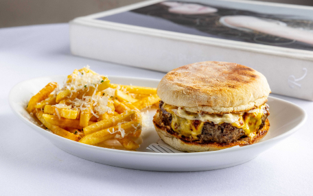

Menu
Меню MO — это авторская гастрономия с азиатскими мотивами от шефа Сергея Кузнецова. Каждая подача
представляет собой гармоничное сочетание вкуса, цвета и текстуры: салат с артишоками, рикоттой и
кедровыми орехами, татаки из тунца с манго в соусе понзу, утиная грудка в компании сахарных слив и
нежного гарнира из киноа с кокосовым молоком, сочный бургер с фуа-гра.

Breakfast
Кстати, в МО весь день действует меню завтраков. В нем есть все, что нежно любят по утрам: и сырники
с сезонными ягодами, и шакшука, которую дополняют фокаччей, и оладьи из цукини. Отдельная
гастрозвезда
утреннего раздела — английский маффин, который подают с говяжьей котлетой и сыром чеддер.
Bar
Барная карта МО славится своей безупречной классикой от Negroni до Margarita, а для любителей
чего-то особенного предлагают вариации коктейлей из раздела signature - тропические, с кислинкой,
крепкие или освежающие.